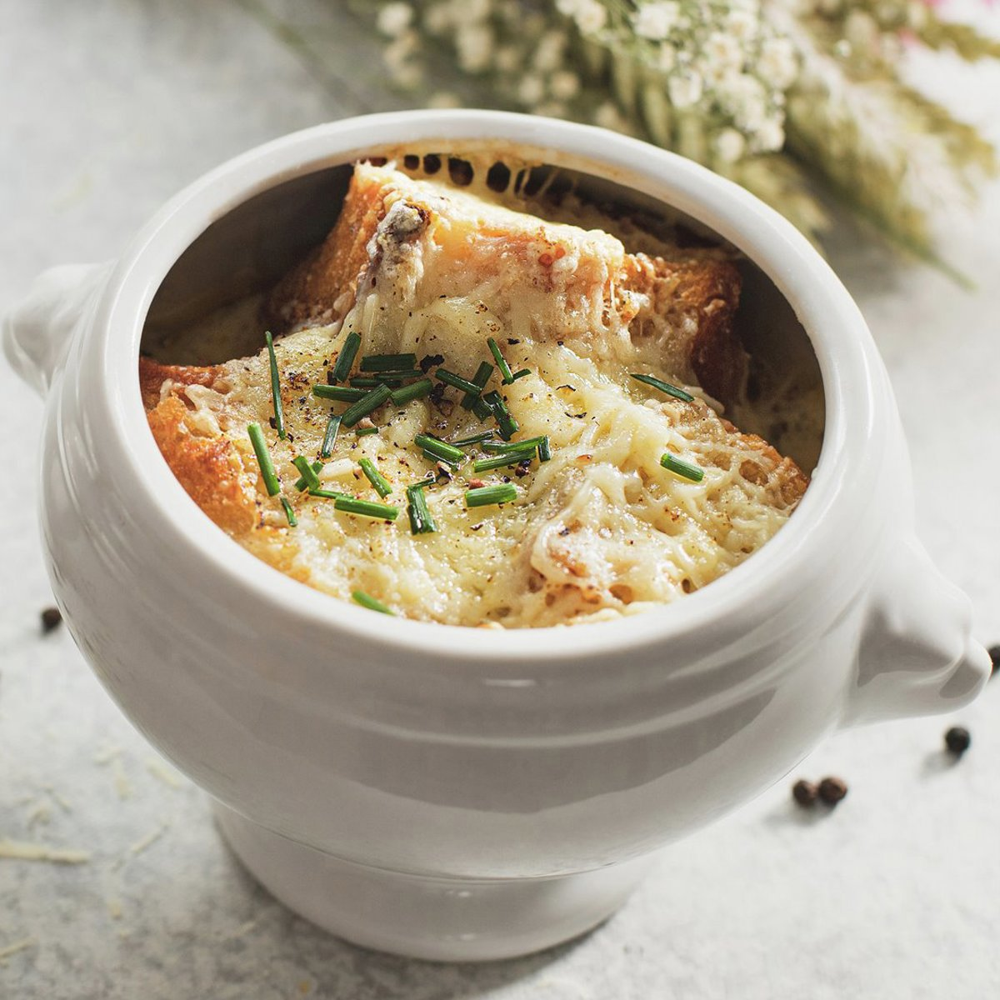

Sopa de Cebolla

Ingredientes:
- 1 Kg. de cebollas
- 2 l. de caldo de carne
- 100 gr. mantequilla
- 1 cucharada de harina
- 100 gr. de queso emmental suizo o gruyére rallado
- Pan tostado en rebanadas
- Tomillo
- 1 hoja de laurel
- Pimienta
Proceso:
- Pelar y partir las cebollas en rodajas finas.
-
Rehogarlas con la mantequilla, sal y pimienta a fuego lento hasta
que estén transparentes sin dorarse.
- Añadir la harina sin dejar de remover.
- Ponerlo en una cazuela con el caldo, el tomillo y el laurel.
- Dejar cocer a fuego lento durante unos 15 minutos.
-
Poner las rebanadas de pan encima, espolvorear el queso y gratinar
al horno.